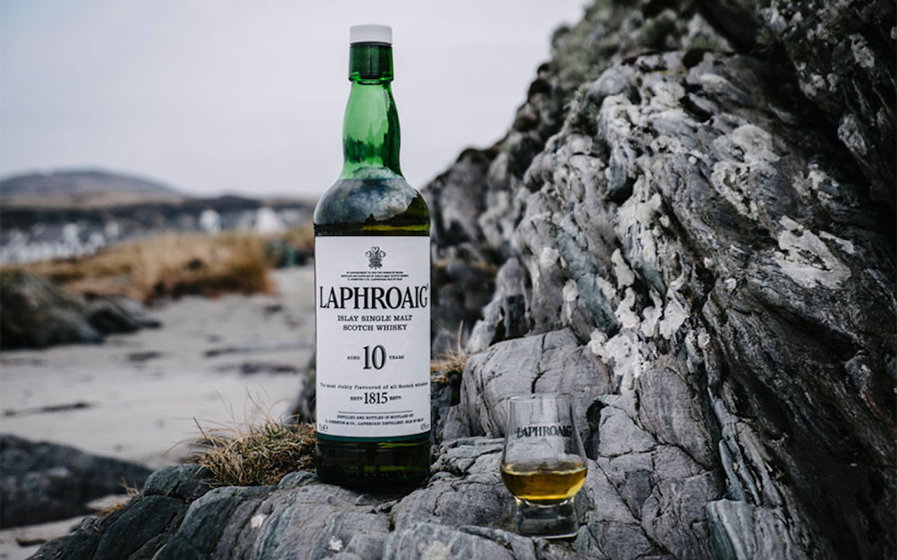

LAPHROAIG 10 YO - DYMNY POTWÓR ?
Przejdź do notki smakowej >>Nazwa Laphroaig (wymawiaj. lafrojg) oznacza „piękna dziupla nad szeroką zatoką” choć tak naprawdę mogłaby być synonimem słowa ‚torfowy’. Nie ma chyba innej marki whisky, której serce leży tak głęboko w dymie. W Polsce największą popularnością cieszy się w tej chwili Laphroaig Quarter Cask, ale do tego przeglądu wybrałem wersję 10 yo. Co się odwlecze to nie uciecze…
Destylarnia Laphroaig została założona na Islay, niedaleko miasteczka Port Ellen przez Alexa i Donalda Johnstonów w 1815 roku. Laphroaig jest jedyną szkocką whisky, która otrzymała patent dostawcy od Karola – Księcia Walii – który podobno umiłował sobie nieprodukowaną już wersję piętnastoletnią. Laphroaig słynie także z inicjatywy Friends of Laphroaig. Każdy może zostać właścicielem kawałka ziemi na terenie destylarni, za którą destylarnią płaci darmową miniaturką whisky jeden raz na rok…pod warunkiem, że wpadniesz ją odebrać.
Laphroaig jest jedną z kilku destylarni, które cały czas słodują część swojego jęczmienia i suszą go nad palącym się torfem. Warto odwiedzić destylarnię i zobaczyć jak wygląda ten proces.Torf na Isaly jest wyjątkowy i daje niepowtarzalną kompozycję fenoli w whisky. Może to właśnie dlatego Laphroaig jest tak piorunująco pełna smaku? Zatorfienie tej whisky waha się w okolicach 40 ppm. Ostatnio wspominałem o prohibicji. Dla Laphoroaig to okres dość wyjątkowy ponieważ jej sprzedaż w USA była legalna! Trzeba tylko zaznaczyć, że nie kupowało się jej w sklepie monopolowym,a w aptece. Władze USA uznały, że whisky ta jest tak silna w swoim dymnym i szpitalnym smaku, że nikt nie będzie stosować jej jako alkoholu do upijania się i potraktowano ją jako środek na trawienie 🙂

Kolor: Jasnobursztynowa
Nos: Wyjątkowo intensywny zapach, lotna whisky, z daleka mocno dymna, z bliska…bardziej dymna. Niepodobna do CI, która spod torfu pokazywała akcenty cytrusowe. Zapach dymu jest naprawdę silny.
Smak: Ją prawie można ugryźć. Jest gęsta, ale nie oleista, wytrawna, dymna, rozgrzewająca. Wiele whisky w tym wieku cechuje pieprzność, która ukrywa alkohol. Laphroaig 10yo tego nie ma. Tutaj po prostu czuć ciepło tej whisky. Dym miesza się z bardzo gorzką czekoladą i drewnem
Finisz: Finisz to eksplozja torfu, który długo gasnie.
Ocena:82/100
Nos: Wyjątkowo intensywny zapach, lotna whisky, z daleka mocno dymna, z bliska…bardziej dymna. Niepodobna do CI, która spod torfu pokazywała akcenty cytrusowe. Zapach dymu jest naprawdę silny.
Smak: Ją prawie można ugryźć. Jest gęsta, ale nie oleista, wytrawna, dymna, rozgrzewająca. Wiele whisky w tym wieku cechuje pieprzność, która ukrywa alkohol. Laphroaig 10yo tego nie ma. Tutaj po prostu czuć ciepło tej whisky. Dym miesza się z bardzo gorzką czekoladą i drewnem
Finisz: Finisz to eksplozja torfu, który długo gasnie.
Ocena:82/100